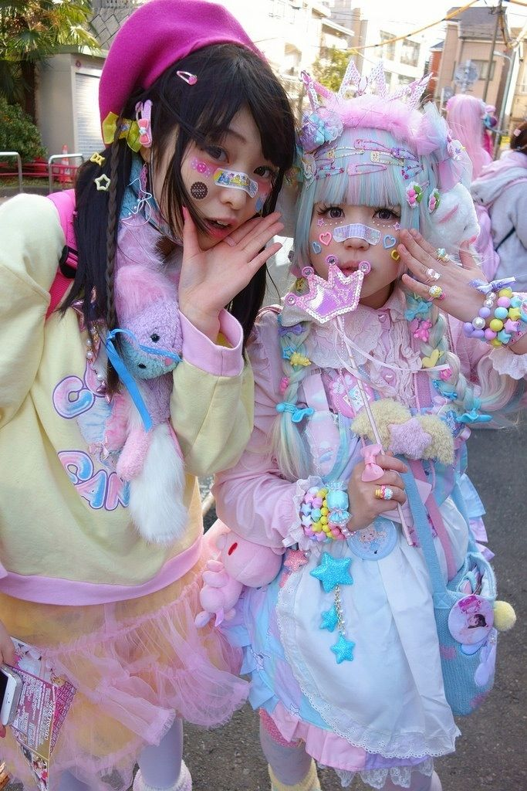
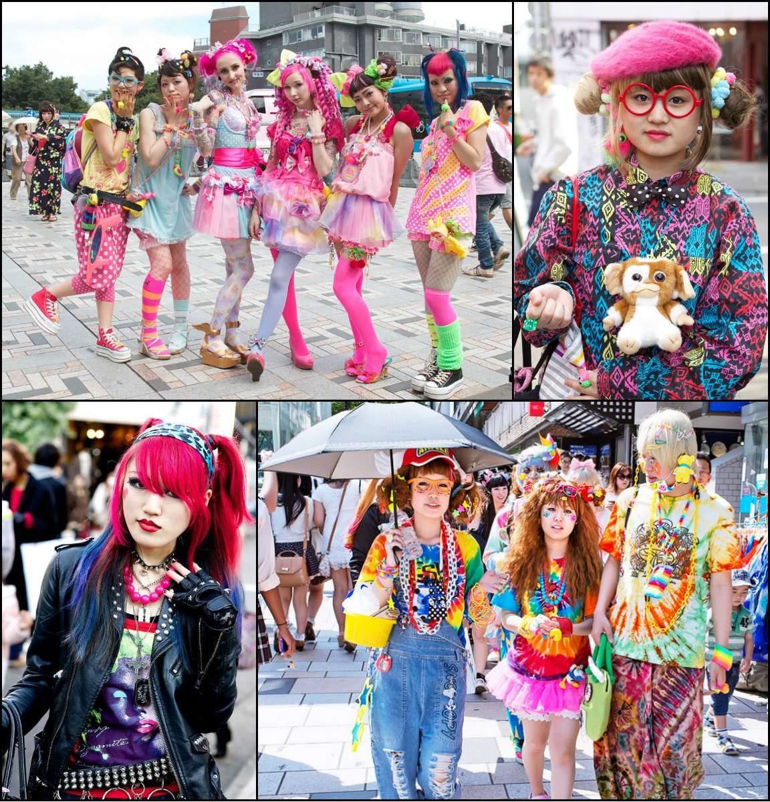

Aasia blogi
elu mul pole
tahaks praegult surra
sest elu on tore
kole ma olen
tantsija olen
olen väike koreaboo
ja
juurde veel weaboo
Ma põhimõtteliselt ei teadnud millest sait teha ja siis ma mõtlesin
mingi väga suvalise saidi et te AJUHÄLVE saate. mitte
vajalikust luuletusest saate teada kes ma olen "mul elu pole üldse"
loodan et keegi ei vii mind pühiaatori juurde xd
-
koreaboo G.S xd

There are many styles of street fashion in Japan, created from a mix of both local and foreign labels. Some of these styles are extreme and avant-garde, similar to the haute couture seen on European catwalks. The rise and fall of many of these trends has been chronicled by Shoichi Aoki since 1997 in the fashion magazine Fruits, which is a notable magazine for the promotion of street fashion in Japan. In 2003, Japanese hip-hop, which had long been present among underground Tokyo's club scene, influenced the mainstream fashion industry. The popularity of the music was so influential that Tokyo's youth imitated their favorite hip hop stars from the way they dress with oversized clothes to tanned skin. sorry et inglise keeles xd
